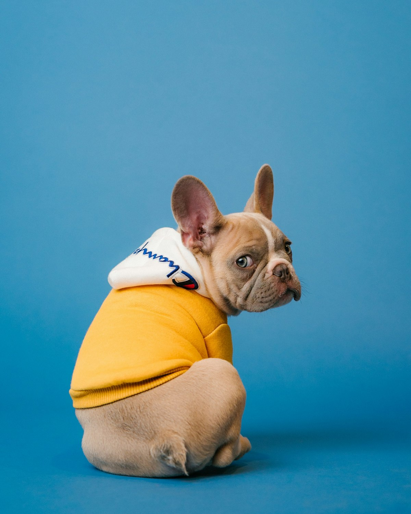

Consulta, vacunas, cirugía y atención equina con un trato cercano. Abrimos los 7 días de la semana en Av. Juárez Sur 233.
Cuidamos a tu compañero, sea de cuatro patas o de cuatro cascos.
Revisión completa, diagnóstico y tratamiento para perros y gatos.
Calendarios preventivos según edad, especie y estilo de vida.
Esterilizaciones y procedimientos con monitoreo y cuidados postoperatorios.
¿Tu animal se lastimó o se siente mal? Llámanos y te orientamos de inmediato.
Baño, corte y limpieza para que tu perro luzca y se sienta bien.
Revisiones, vacunación, desparasitación y seguimiento médico para equinos.

Somos una clínica veterinaria en el corazón de Texcoco que atiende tanto a mascotas de casa como a caballos. Nuestro enfoque es integral: medicina preventiva, diagnóstico oportuno y tratamientos claros para que sepas siempre qué necesita tu animal.
Más de 36 opiniones en Google
Opiniones de ejemplo; se reemplazarán por reseñas reales autorizadas.
Sí. Como su nombre lo dice, en Can & Horse atendemos perros, gatos y caballos. Para equinos llámanos y coordinamos la revisión.
Te recomendamos agendar por teléfono o WhatsApp para darte un horario preciso, aunque también recibimos pacientes sin cita según disponibilidad.
Lunes a viernes de 10:00 a 19:30, sábado de 9:00 a 18:00 y domingo de 9:00 a 17:00.
Sí. Armamos el calendario de vacunación y desparasitación según la edad y especie de tu animal.
En Av. Juárez Sur 233, Centro, Texcoco de Mora, Estado de México, C.P. 56100.
Can & Horse
Av. Juárez Sur 233, Centro
56100 Texcoco de Mora, Méx.
Teléfono: 595 931 4037
| Lun – Vie | 10:00 – 19:30 |
| Sábado | 9:00 – 18:00 |
| Domingo | 9:00 – 17:00 |